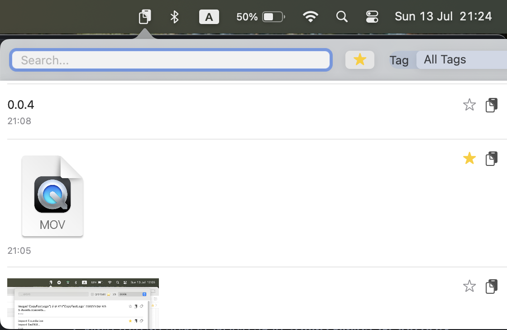

עוצמה ופשטות, במקום אחד
היסטוריה חכמה
שומר טקסטים ותמונות באופן אוטומטי. שום דבר לא הולך לאיבוד.
חיפוש מיידי
מצאו כל פריט תוך שניות עם יכולות חיפוש מתקדמות.
ארגון וסדר
סמנו מועדפים והוסיפו תגיות כדי לשמור על סדר ונגישות.
צפו איך זה עובד